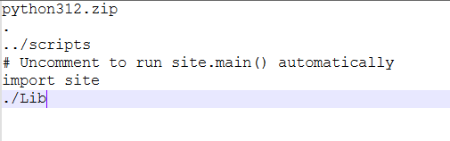

https://zhuanlan.zhihu.com/p/691339803
一、什么是嵌入式打包？#
嵌入式解释器（Windows embeddable package） 是 Python 官方专门提供给“打包场景”的：
- 从 python.org/downloads/windows/ 下载 Windows embeddable package (32/64-bit)。
- 它是一个绿色版 zip 包，不需要安装，解压后就是一个最小可运行的 Python。
- 适合用来嵌入到 PyStand / PyInstaller / cx_Freeze 等打包工具里。
- 适用版本：Python 3.5 及以上（因为嵌入式解释器是 3.5 开始提供的）。
- 嵌入式解释器和开发环境的版本保持一致
- 打包原理
- 你把这个 embeddable 包解压到你的项目目录。
- 把你写的 Python 脚本（或编译成
.pyc/.pyd/.pyo）放进去。 - 配置好
pythonXY._pth文件（类似虚拟环境的sys.path设置），让它能找到你项目的依赖。
- 区别于 PyInstaller、cx_Freeze 等工具
- PyInstaller：把代码和解释器打成一个单独 exe。
- Embeddable：保留一个完整的独立 Python 环境 + 你的程序，更像是“便携版 Python + 应用”。
如果你下载了 python-3.12.9-embed-amd64.zip，解压后结构大概是：
|-- python.exe
|-- python312.zip ← 标准库，不用解压占用空间小，Python 启动时直接从 zip 里加载模块。
|-- python312._pth ← 配置搜索路径二、打包准备#
准备代码#
main.py
import sys
import numpy as np
import pandas as pd
from PyQt5.QtWidgets import QApplication, QMainWindow, QVBoxLayout, QWidget, QLabel
from matplotlib.backends.backend_qt5agg import FigureCanvasQTAgg as FigureCanvas
from matplotlib.figure import Figure
class MplCanvas(FigureCanvas):
"""Ultimately, this is a QWidget (as well as a FigureCanvasAgg, etc.)."""
def __init__(self, parent=None, width=5, height=4, dpi=100):
fig = Figure(figsize=(width, height), dpi=dpi)
self.axes = fig.add_subplot()
# 初始化父类
super(MplCanvas, self).__init__(fig)
class MainWindow(QMainWindow):
def __init__(self):
super(MainWindow, self).__init__()
# 创建MplCanvas实例作为窗口中的中央部件
self.canvas = MplCanvas(self, width=5, height=4, dpi=100)
# 生成数据并绘制
x_values = np.linspace(0, 2 * np.pi, num=200)
y_values = np.sin(x_values)
df = pd.DataFrame({'x': x_values, 'sin(x)': y_values})
self.canvas.axes.plot(x_values, y_values, label='Sine Function')
# 设置图表标题、坐标轴标签等
self.canvas.axes.set_xlabel('X axis (x)')
self.canvas.axes.set_ylabel('Y axis(sin(x))')
self.canvas.axes.set_title('y = sin(x)')
self.canvas.axes.legend()
# 布局管理
layout = QVBoxLayout()
layout.addWidget(self.canvas)
self.text=QLabel(str(df.info))
layout.addWidget(self.text)
container = QWidget()
container.setLayout(layout)
self.setCentralWidget(container)
if __name__ == '__main__':
app = QApplication(sys.argv)
main_win = MainWindow()
main_win.show()
sys.exit(app.exec_())准备虚拟环境#
pycharm创建虚拟环境项目，将代码文件放进去,运行一次
使用pystand壳打包#
1.下载pystand项目中的pystand程序，这是一个C++编写的壳，用来调用python解释器运行代码。
你也可以不用这个壳，直接bat命令调用python解释器运行main.py文件，但这样多少显得不太美观。
https://github.com/skywind3000/PyStand/releases

只需要看这两个就行，一个是py38-x64，一个是py38，分别对应64位解释器和32位解释器，同时也对应了64位的pystand及32位的pystand，请注意这俩一定要对应上。不能用32位的pystand去运行64位的python解释器。
其他Releases版本内包含的pyqt5,pyside2等，都是32位的 pystand-v1.1.1-exe.zip，这个Releases版本也挺重要的，里面包含了无界面与有界面的pystand壳，适用于不同的应用场合，看你的项目是否需要命令行界面（那个黑框）。
2.本文以64位为例，下载PyStand-py38-x64.7z。下载到本地后，它应该长这样。

- runtime文件夹里面放的是python embeddable解释器，这里面自带的是python3.8.10。
- site-packages里面放的是第三方库，空的。
- pystand.exe是一个c++写的壳，双击即可运行
- pystand.int中保存的是python代码，你可以理解为main.py文件，这个文件中必须是python代码（注意哦，必须是明文代码，原因可以去看pystand源码），用作程序入口。
你可以选择将runtime文件夹里面的内容删掉，自己去官网下载其他版本的python embeddable解释器，我这里以python 3.12为例， python.org/downloads/windows/ 去官网下载，并替换runtime文件夹中的文件。
3.将你的项目所依赖的虚拟环境下的site-package文件夹下所有内容copy到pystand的site-package文件夹下，请注意，如果你的项目所依赖的虚拟环境并不是特别的干净，比如还有项目根本没用到的scipy库等，我建议你重新新建虚拟环境，安装好依赖后拷贝。（其实拷贝系统环境也行，就是一般没那么干净。有很多冗余的库）
（这步操作一般没啥问题，但是有些第三方库不讲武德，比如最新版torch库，它把二进制依赖dll文件扔到sitepackage外面，只复制sitepackage里面的内容，会报错dll load failed，这种时候有其他的处理办法）
到这儿，打包程序的环境配置完毕。
4，在pystand目录下，新建script目录，将程序代码拷贝到里面去。并对代码入口做简要修改，注释掉 if name == ‘main’:，新建入口函数，名称随意，这里以start为例。
def start():
app = QApplication(sys.argv)
main_win = MainWindow()
main_win.show()
sys.exit(app.exec_())
# if __name__ == '__main__':
# app = QApplication(sys.argv)
# main_win = MainWindow()
# main_win.show()
# sys.exit(app.exec_())5，修改pystand.int中的代码，以文本编辑器打开该文件，直接清空内容，输入以下代码。这样就表示，从start函数启动程序。
from main import start
if __name__ == "__main__":
#运行入口函数
start()但是第4步我们将main.py文件扔到了scripts文件夹下，程序是不知道main.py文件在哪儿的，所以会报错： from main import start ModuleNotFoundError: no module named “main” 去改runtime文件夹里面的._pth文件，加一行../scripts就ok了
python312.zip
.
../scripts
# Uncomment to run site.main() automatically
import site6，双击pystand.exe，运行程序，可得到如期结果。到这儿，打包算初步完成。
-
如果不能如期运行，可以使用cmd命令运行pystand.exe，可以查看到报错信息。
-
如果需要自定义程序名字，需要同时修改pystand.exe及http://pystand.int两个文件，保持同名即可。
-
如果觉得保持同名很麻烦，想允许用户自己随便改名，那么请将http://pystand.int改名为http://pystand_static.int即可。
-
如果觉得int文件有点碍眼，那就得修改pystand源码了，稍微改一下就可以让pystand去runtime里面找int文件，就可以藏起来了。（但是不推荐改，最好用韦神提供的exe，他拿去报白名单了，报毒概率低哦）
-
如果需要自定义程序图标，请使用Resource Hacker 更换图标，非常简单。
-
程序源代码是以源码形式放在script目录中的，建议使用nuitka批量将py文件转为pyd文件，提升运行速度的同时隐藏了源码。
三、体积优化#
优化第一步#
删除不需要的固有第三方库，请删除sitepackage文件夹下的pip，pip-info，wheel，wheel-info，setuptools，setuptools-info，合计6个文件夹，这大概是15M。请删除runtime文件夹下的get-pip.py文件，这个是python官方提供拿来安装pip的，不需要。
优化第二步#
使用神秘脚本删除程序运行不需要的第三方库文件。
请到下面的链接获取，如果觉得好用，请大力宣传哦！
打包瘦身脚本：https://github.com/mengdeer589/PythonSizeCruncher
请仔细阅读该脚本使用说明，本文仅展示瘦身效果。
注意注意：请对sitepackage文件夹使用哦，本脚本对runtime文件夹内的文件没有识别能力。
四、加密源码#
按照本文所推荐的打包方式，源码其实是放在script文件夹中，以python源码的形式存放的。现在我们来简单加密一下，不让别人随随便看见。
请安装nuitka，然后对你的代码文件夹，使用–module命令，将源码编译为pyd文件。上面已经提到了详细命令。
而pyd文件比pyc文件安全的多，它类似于dll文件，一般人很难破解，想逆向还原源码，那更是不可能。
但是pyd文件作为一个依赖模块，是可以直接通过dir函数查看其暴露的接口的，所以请将重要变量匿名化（不能被import，dir出来）
五、常见问题#
打包tkinter模块#
官方提供的嵌入式解释器并不包含pip工具，以及tkinter模块，下面的步骤是怎么补上这个tkinter模块。
注：本方法目的在于后续可以复用，所以并不按照官方的目录结构来。
①复制tkinter模块。从已经安装了tkinter模块的相同python解释器环境中复制，该模块通常位于解释器的Lib文件夹下，将tkinter文件夹复制到pystand/runtime/Lib文件夹下，注意，这里需要新建一个Lib文件夹。
②复制tcl文件夹里面所有的文件，到pystand/runtime/Lib文件夹下，tcl文件夹通常位于解释器的同级目录。
③复制二进制模块。复制_tkinter.pyd，tcl86t.dll，tk86t.dll三个文件到pystand/runtime/Lib文件夹下，这三个文件通常位于解释器的DLLs文件夹下。
④修改路径。修改runtime文件夹里面的python310._pth文件，增加一行./Lib。注意，这里有个点，代表同级目录的Lib文件夹。
tips:20240907更新，若打包python版本为3.12，tkinter打包时，需复制系统python3.12解释器dlls文件夹下的zlib1.dll到pystand/runtime/Lib文件夹下。
现在可以运行程序了。如果后续还需要打包tkinter模块。直接复制这里弄好的Lib文件夹跟._pth文件到runtime文件夹下即可实现复用。

